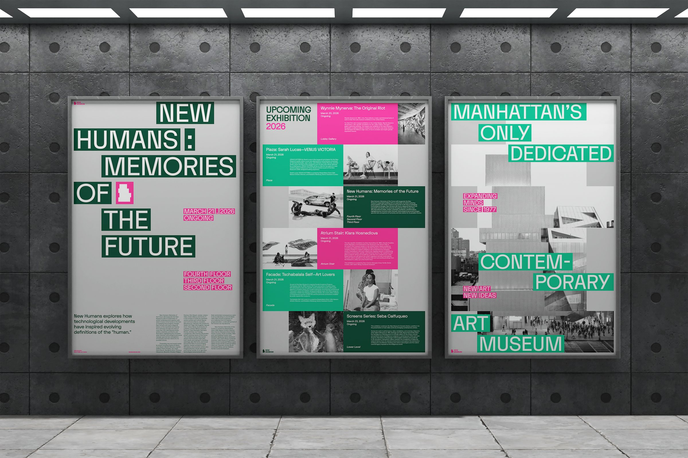
The New Museum has no permanent collection — every exhibition is temporary. What endures is the building.
This identity treats the museum’s two landmark structures on the Bowery as its source, translating their silhouettes and facades into a logomark and a generative type system.
The current identity reduces the building to a flat symbol. With the OMA-designed Toby Devan Lewis Building opening in 2026, the new system absorbs both buildings — every element, from logomark to type, follows their stacked form.
A base of black and concrete grey lets the art lead, a deep green anchors the identity, and accents of magenta and mint carry the energy of contemporary art.
Letterhead, envelopes and business cards are cut to the stepped silhouette of the building, putting the architecture quite literally in hand.
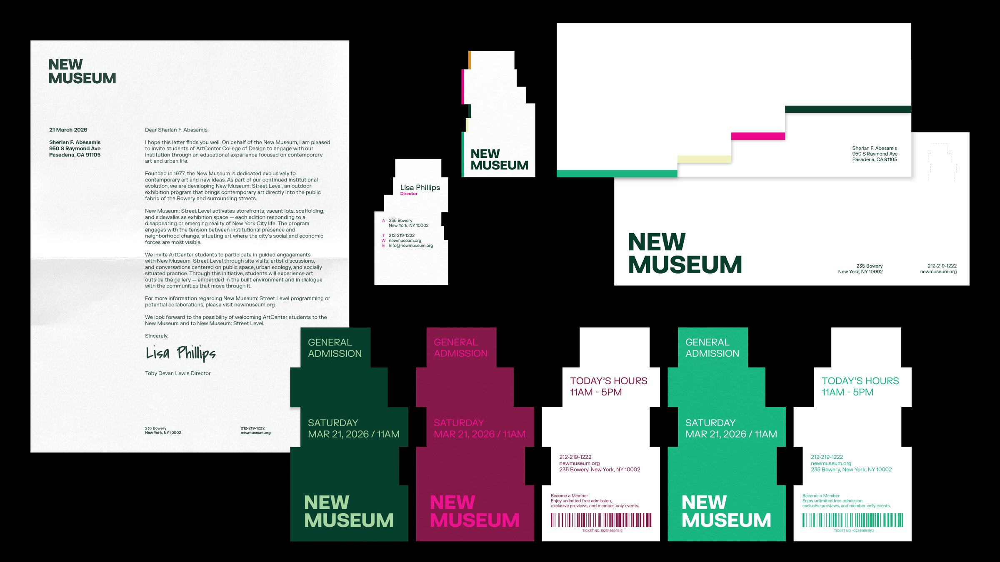
The visitor booklet carries the building’s silhouette on its cover and brings together the museum’s history, floor plans, ticketing, upcoming exhibitions and membership in a single guide.
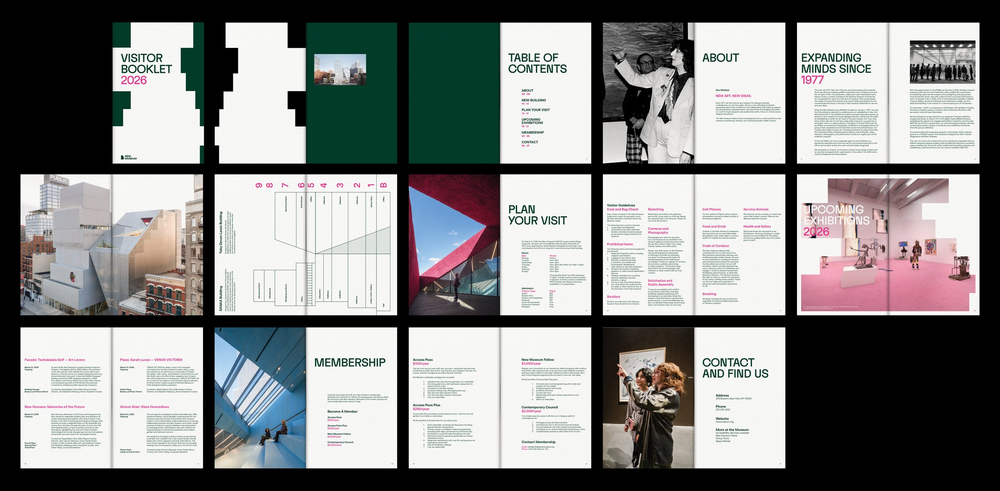
The series includes a poster for a featured exhibition, one announcing upcoming exhibitions and one introducing the concept behind the New Museum, each set in the building-based type system.
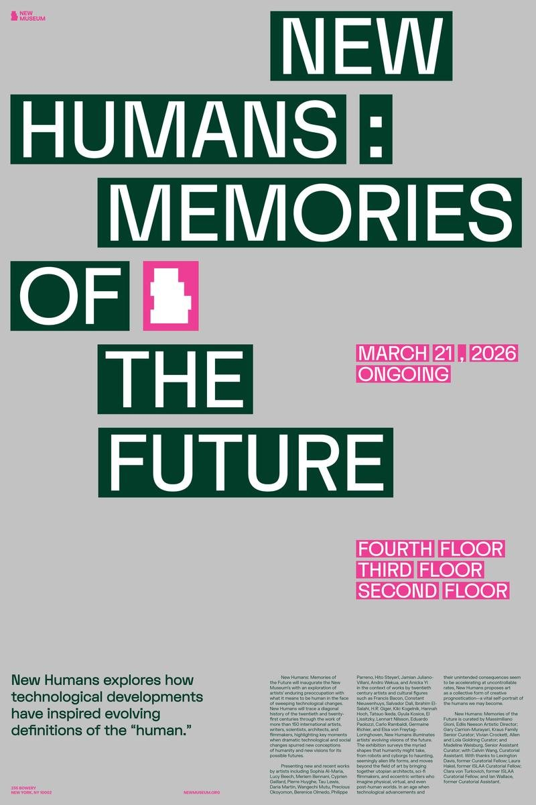
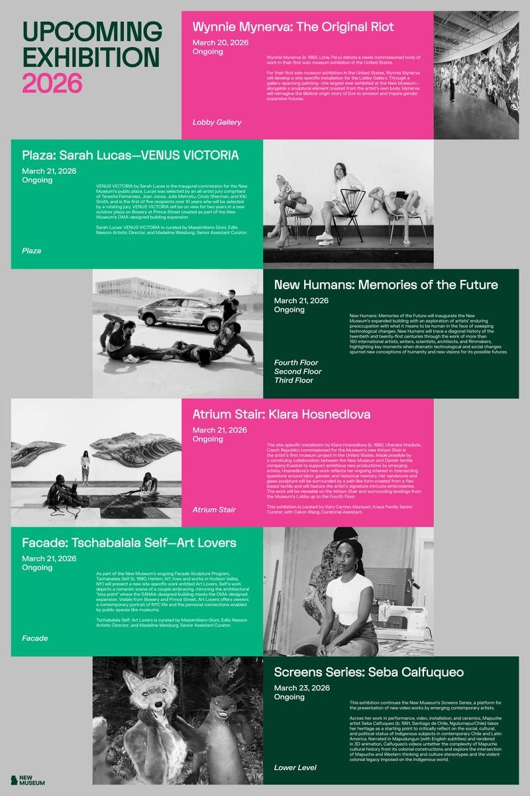
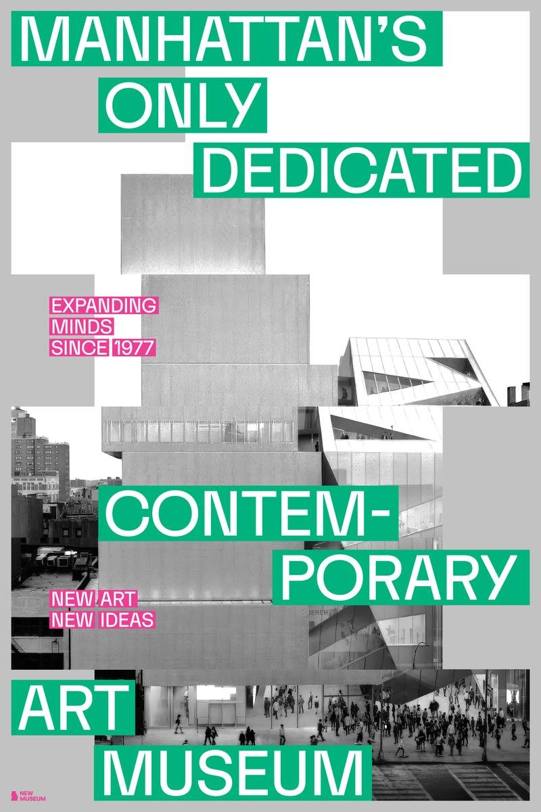
A generative tool that sets any text in the building-based typographic system, used across the website and other touchpoints.
Installed on the street outside the museum, it also invites passers-by on the Bowery to type, play and interact with the identity.
The website carries the building’s structure into the screen. As visitors scroll and hover, sections stack, shift and step back like the museum’s offset volumes.
Inside the museum, wayfinding and signage continue the same visual language, with the building’s stepped form guiding visitors from floor to floor.
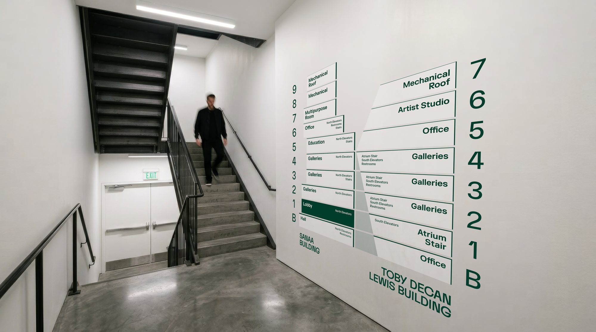
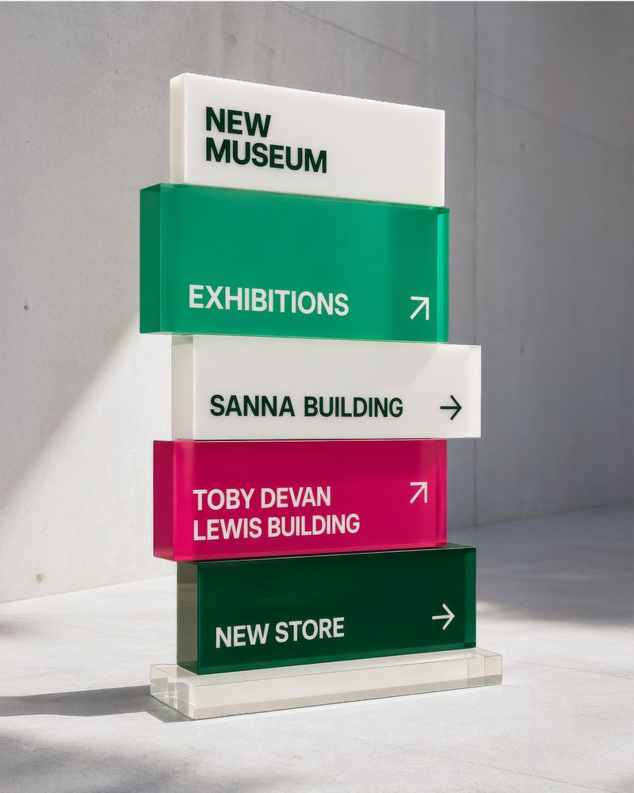
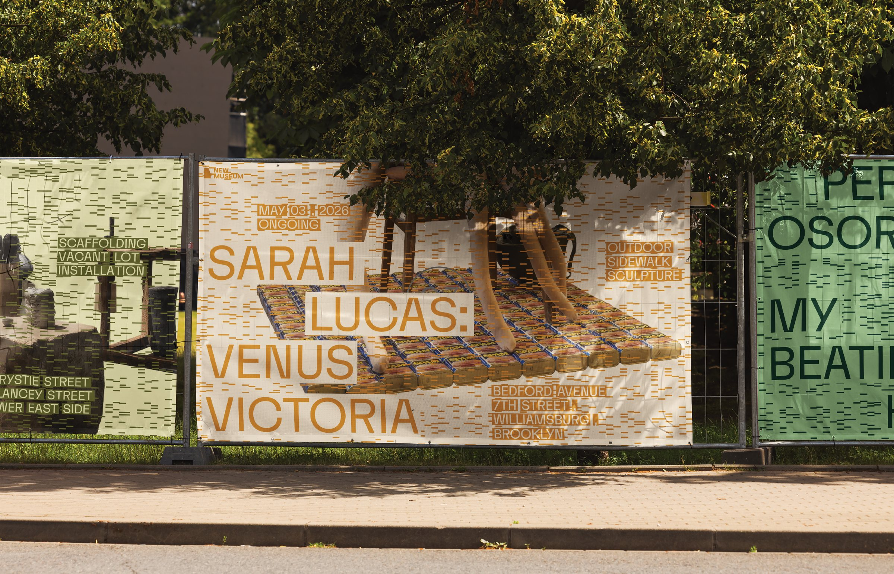
Street Level is a sub-initiative hosted by the New Museum.
Taking the city itself as the exhibition space, it maps contemporary art across New York — public murals, sculptures, independent galleries and artist-run spaces beyond institutional walls. Beginning at the Bowery, it offers a guided entry point into the city as a living, borderless gallery.
The posters introduce the concept behind Street Level and feature three artworks, each paired with a pattern created by the text generator.
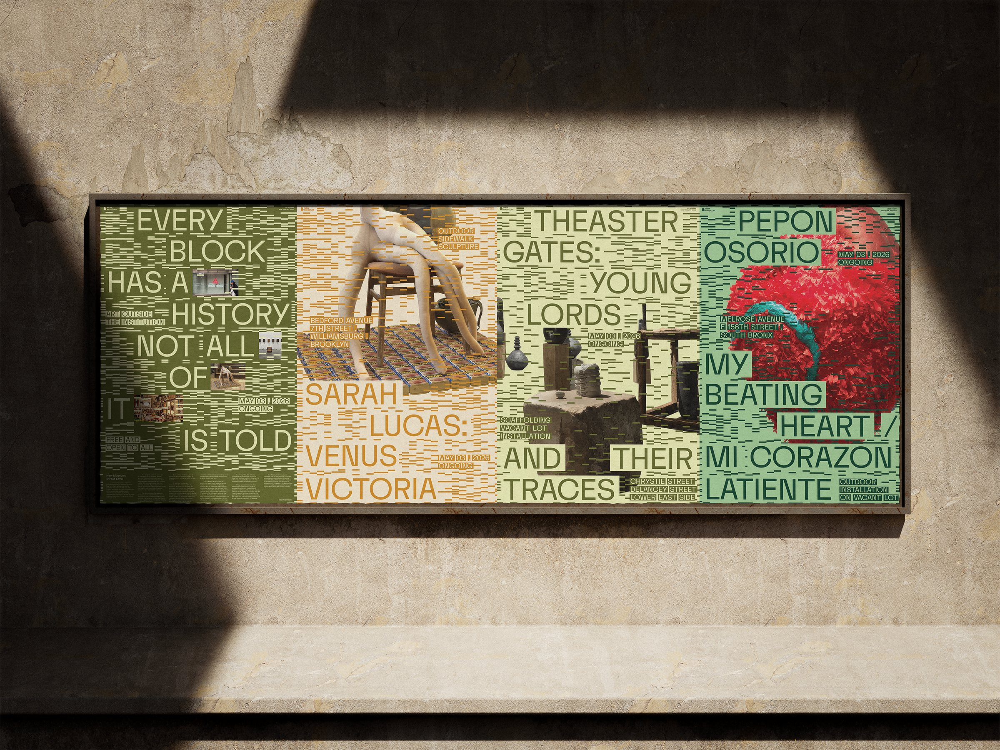
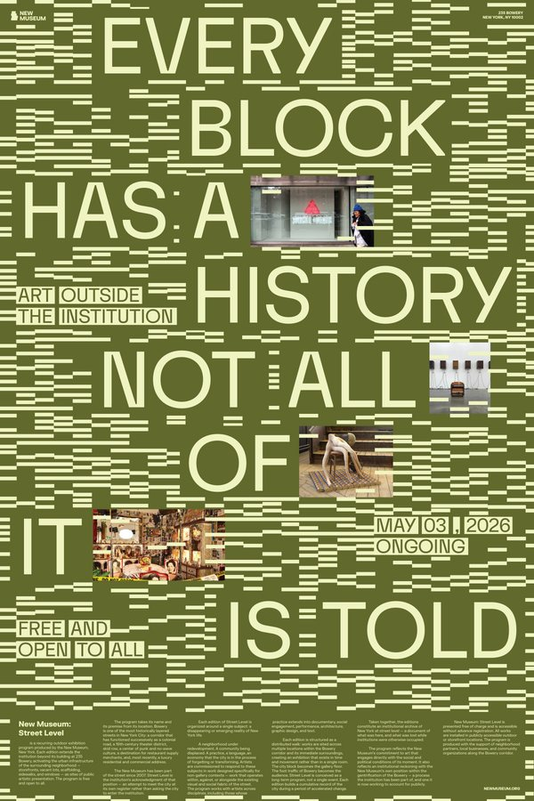
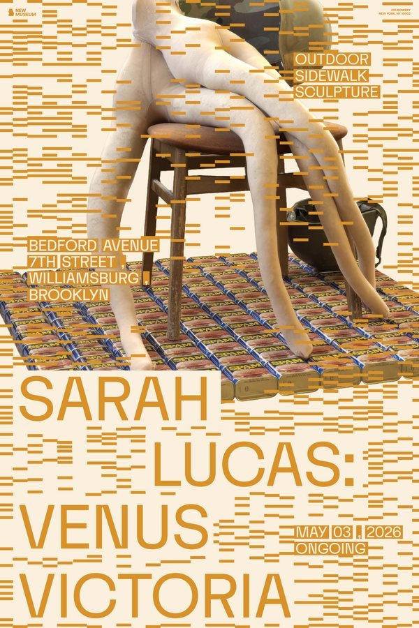
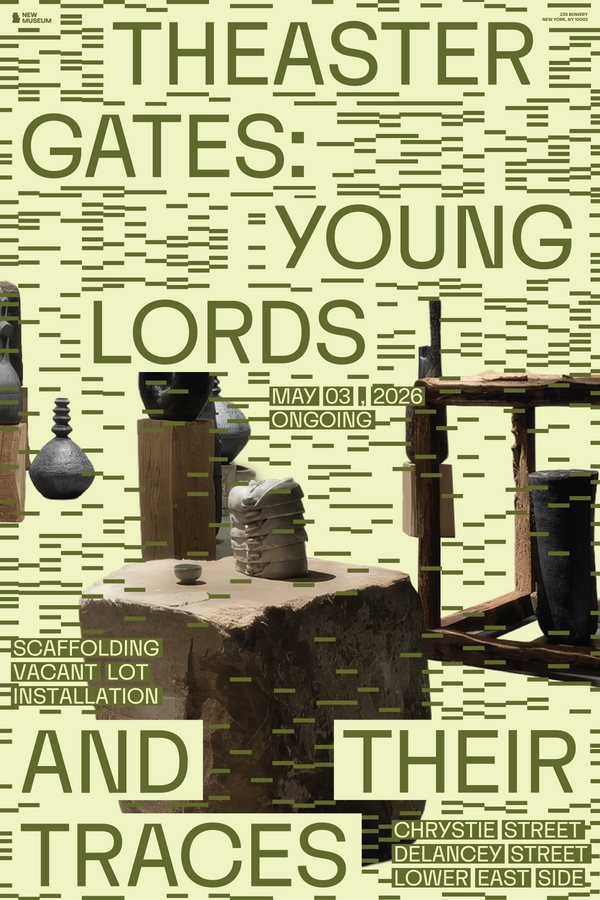
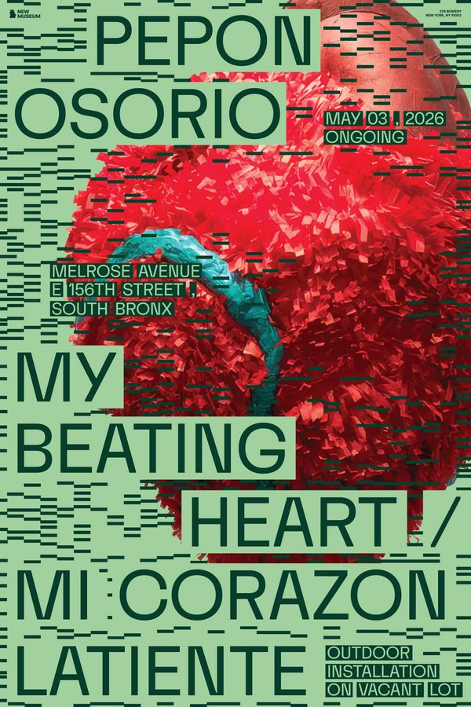
A free flyer handed to every New Museum visitor and linked to the Street Level website, so the guide can be explored in print or on screen.
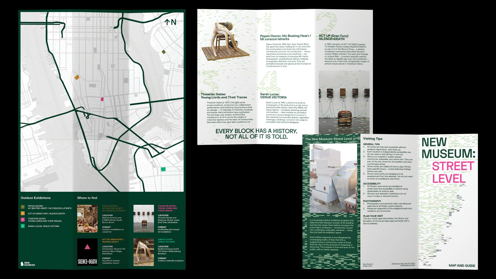
Housed within the New Museum’s main website, the Street Level pages carry the same information as the flyer in digital form. Scrolling and hovering trigger playful effects inspired by the building, echoing the museum’s own site.
A playful map generator that helps people uncover the exhibitions and artworks hidden across the city, turning every walk into a search for art.
At street level, the text generator comes to life on the museum’s facade — its type shifts in real time as people walk past, turning the building front into an ever-changing display.
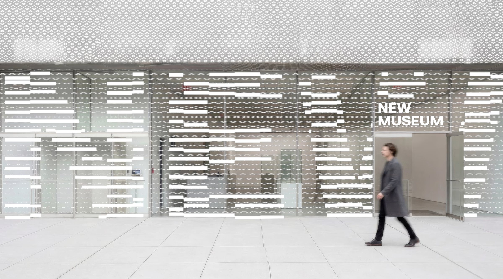
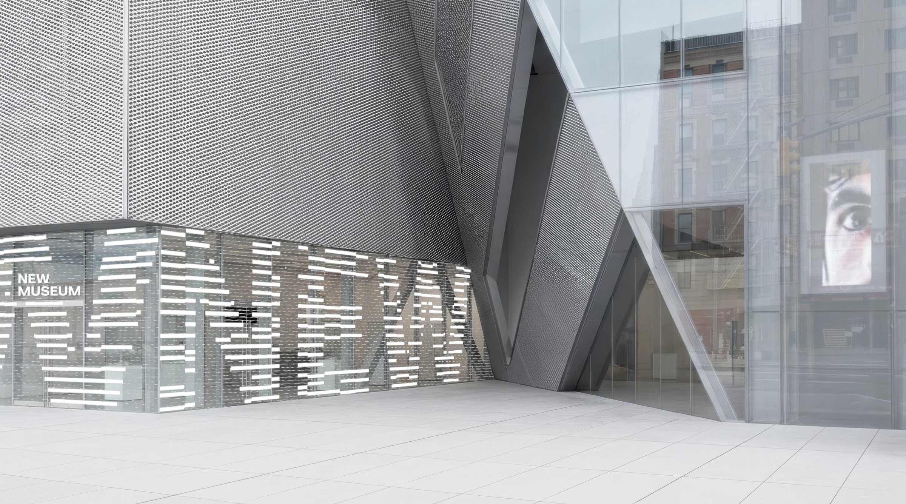